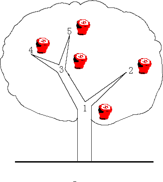

Description
There is an apple tree outside of kaka’s house. Every autumn, a lot of apples will grow in the tree. Kaka likes apple very much, so he has been carefully nurturing the big apple tree.
The tree has N forks which are connected by branches. Kaka numbers the forks by 1 to N and the root is always numbered by 1. Apples will grow on the forks and two apple won’t grow on the same fork. kaka wants to know how many apples are there in a sub-tree, for his study of the produce ability of the apple tree.
The trouble is that a new apple may grow on an empty fork some time and kaka may pick an apple from the tree for his dessert. Can you help kaka?
中文描述
卡卡家外面有一棵苹果树。每年秋天，树上都会长出许多苹果。卡卡非常喜欢苹果，所以他一直在精心培育大苹果树。
这棵树有N个叉子，它们通过树枝相连。卡卡用1到n给叉编号，而根总是用1编号。苹果会在叉子上生长，两个苹果不会在同一个叉子上生长。为了研究苹果树的生产能力，卡卡想知道一个子树里有多少苹果。
问题是，一个新苹果可能会在一个空叉子上生长一段时间，卡卡可能会从树上摘一个苹果作为甜点。你能帮卡卡吗？

Input
The first line contains an integer N (N ≤ 100,000) , which is the number of the forks in the tree.
The following N - 1 lines each contain two integers u and v, which means fork u and fork v are connected by a branch.
The next line contains an integer M (M ≤ 100,000).
The following M lines each contain a message which is either
“C x“ which means the existence of the apple on fork x has been changed. i.e. if there is an apple on the fork, then Kaka pick it; otherwise a new apple has grown on the empty fork.
or
“Q x“ which means an inquiry for the number of apples in the sub-tree above the fork x, including the apple (if exists) on the fork x
Note the tree is full of apples at the beginning
第一行包含一个整数n（n≤100000），它是树中的叉数。下面的n-1行分别包含两个整数u和v，这意味着fork u和fork v通过分支连接。
下一行包含整数m（m≤100000）。
以下M行中的每一行都包含一条消息，“C x”表示叉x上苹果的存在已经改变。也就是说，如果叉子上有一个苹果，那么卡卡就会摘下来；否则，一个新的苹果就会长在空叉子上。或“Q x”表示对叉X上方子树中苹果数量的查询，包括叉X上的苹果（如果存在）。
注意：这棵树一开始就满是苹果
Output
For every inquiry, output the correspond answer per line.
Sample Input
1 | 3 |
Sample Output
1 | 3 |
自序
这里一开始我就意识到要用到树的数据结构来遍历和增加节点，但是我开始以为是二叉树，随后在老师的提醒下发现并不是二叉树，而是随意树。这就有点尴尬，二叉树我都忘得差不多了，你还要给我个树，我TM怎么记得是怎么表示的啊？
我甚至开始还以为要用二维数组来表示树，最后发现是我太天真。当然能够将树忘得这么干净，我也确实是太自傲了。
我总以为我记得那些图、树、链表等等东西，总感觉随便一个人来面试我我都没问题，结果一道小题目就让我跪了。数据结构的基础，我真的没我想象中的那么好，甚至是曾经难以相信的差。
在考场上我不断不断地问我自己，树怎么表示？用数组怎么表示？树的节点怎么定义？树的遍历怎么搞？最简单的前序遍历的递归方式怎么写？怎么添加节点和修改节点？
最后我不得不承认，我确实忘得一干二净，在考场上开始垂头丧气，挣扎了那么久，最后12点整了，还是没做出来。
如今趁着余温未散，搜到了这个题目的原题，再复习一遍数据结构的树。
快速复习树的百科废话

定义
树状图是一种数据结构，它是由n（n>=1）个有限结点组成一个具有层次关系的集合。把它叫做“树”是因为它看起来像一棵倒挂的树，也就是说它是根朝上，而叶朝下的。它具有以下的特点：
每个结点有零个或多个子结点；
没有父结点的结点称为根结点；
每一个非根结点有且只有一个父结点；
除了根结点外，每个子结点可以分为多个不相交的子树；
树（tree）是包含n（n>=0）个结点的有穷集，其中：
每个元素称为结点（node）；
有一个特定的结点被称为根结点或树根（root）。
除根结点之外的其余数据元素被分为m（m≥0）个互不相交的集合T1，T2，……Tm-1，其中每一个集合Ti（1<=i<=m）本身也是一棵树，被称作原树的子树（subtree）。
我们可以形式地给出树的递归定义如下:
- 单个结点是一棵树，树根就是该结点本身。
- 设T1,T2,..,Tk是树，它们的根结点分别为n1,n2,..,nk。用一个新结点n作为n1,n2,..,nk的父亲，则得到一棵新树，结点n就是新树的根。我们称n1,n2,..,nk为一组兄弟结点，它们都是结点n的子结点。我们还称T1,T2,..,Tk为结点n的子树。
空集合也是树，称为空树。空树中没有结点。
相关术语
- 节点的度：一个节点含有的子树的个数称为该节点的度；
- 叶节点或终端节点：度为0的节点称为叶节点；
- 非终端节点或分支节点：度不为0的节点；
- 双亲节点或父节点：若一个节点含有子节点，则这个节点称为其子节点的父节点；
- 孩子节点或子节点：一个节点含有的子树的根节点称为该节点的子节点；
- 兄弟节点：具有相同父节点的节点互称为兄弟节点；
- 树的度：一棵树中，最大的节点的度称为树的度；
- 节点的层次：从根开始定义起，根为第1层，根的子节点为第2层，以此类推；
- 树的高度或深度：树中节点的最大层次；
- 堂兄弟节点：双亲在同一层的节点互为堂兄弟；
- 节点的祖先：从根到该节点所经分支上的所有节点；
- 子孙：以某节点为根的子树中任一节点都称为该节点的子孙。
- 森林：由m（m>=0）棵互不相交的树的集合称为森林；
种类
- 无序树：树中任意节点的子结点之间没有顺序关系，这种树称为无序树,也称为自由树;
- 有序树：树中任意节点的子结点之间有顺序关系，这种树称为有序树；
- 二叉树：每个节点最多含有两个子树的树称为二叉树；
- 完全二叉树
- 满二叉树
- 霍夫曼树：带权路径最短的二叉树称为哈夫曼树或最优二叉树；
深度
定义一棵树的根结点层次为1，其他节点的层次是其父结点层次加1。
一棵树中所有结点的层次的最大值称为这棵树的深度。
符号表达法
用括号先将根结点放入一对圆括号中，然后把它的子树由左至右的顺序放入括号中，而对子树也采用同样的方法处理；同层子树与它的根结点用圆括号括起来，同层子树之间用逗号隔开，最后用闭括号括起来。如前文树形表示法可以表示为：（1（2（5（9，10）），3（6，7），4（8）））
遍历表达法

遍历表达法有3种方法：
- 先序遍历
- 中序遍历
- 后序遍历
例如右图：
- 其先序遍历为ABDECF
- 其中序遍历为DBEAFC
- 其后序遍历为DEBFCA
自己实现
我在经过一个下午的煎熬，从下午一点多到如今，中间吃个饭睡个觉，然后便被这道题纠缠住。
我其实不得不承认了，我过往没学过多叉树的实现，不知道用链表实现多叉树的原理所在。而只是一厢情愿的认为二叉树和树差不了多少，其实也确实差不了多少，但问题在于我总静不下心去看那些实现源码，不愿意去思考Node节点代码中为什么要设置一个ParentId和SelfId，不知道LinkList应该写在Node节点代码中，还是写在NodeTree的代码中，我不知道在用链表实现树的过程中，应该分3层——一层Node、一层NodeTree、最上面一层NodeTreeLink，还是分2层——直接一层Node、最上面一层NodeTreeLink
无数问题在困扰着我，而我还天真的以为数据结构学的多好，以为多叉树和二叉树差不多，以为Java实现会更容易，以为我能手动实现一遍树，以为我自己能直接推导。。
被打脸的好狠
只能留下这个坑，日后再来弄吧（2019.3.17）
好了，我回来了（2019.3.19）
1 | import java.util.LinkedList; |
对于java实现多叉树的操作，非常感谢https://blog.csdn.net/sss1342746626/article/details/78868026这个博客，让我豁然开朗，写的通俗易懂